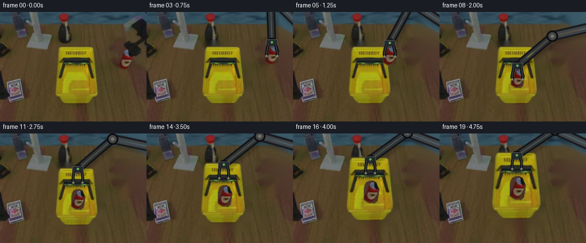
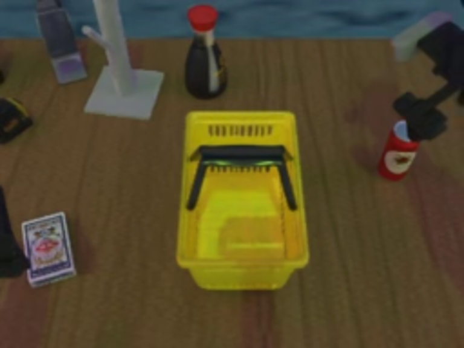
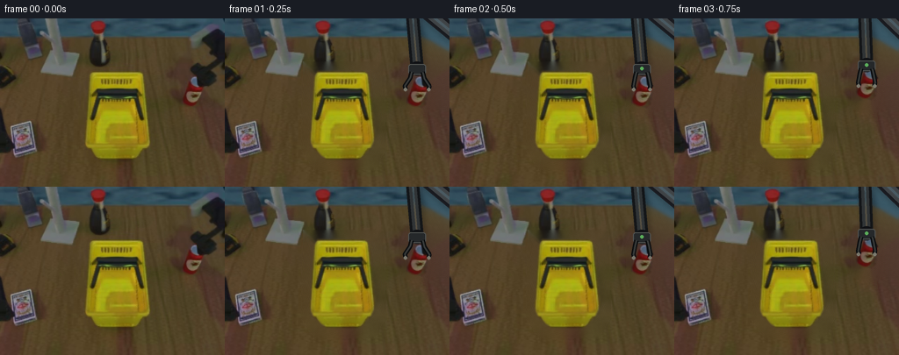
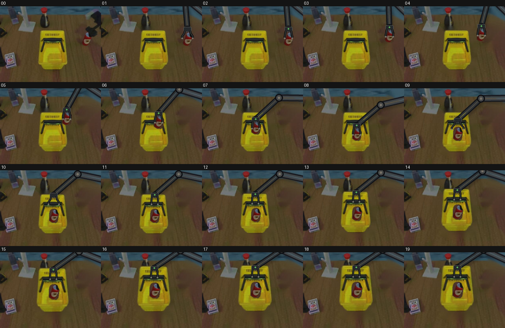

CODING AGENTS AS PIXEL WORLD MODELS
traex/GPT-5.6-Sol · common50_0047
点击播放 · 原生 RGB 像素
逐轮保存的候选
回放视频、检查图与代码变化。
每份候选均可单独播放。实际图片检查记录在下方工具轨迹中。
候选 01播放与检查图
点击播放 · 原生 RGB 像素
展开代码变化
--- 上一保存版本
+++ 本次保存版本
@@ -0,0 +1,211 @@
+from pathlib import Path
+import math
+import cv2
+import numpy as np
+from PIL import Image, ImageDraw, ImageFilter
+import artifact_io
+
+ROOT = Path(__file__).resolve().parent
+W,H = 256,192
+src = np.array(Image.open(ROOT/'first_frame.png').convert('RGB'))
+
+# Utility masks at native resolution.
+def poly_mask(points, blur=0):
+ im=Image.new('L',(W,H),0); ImageDraw.Draw(im).polygon(points,fill=255)
+ if blur: im=im.filter(ImageFilter.GaussianBlur(blur))
+ return np.array(im)
+
+def dilate(mask, n):
+ return cv2.dilate(mask, np.ones((n,n),np.uint8))
+
+# Tight, feathered silhouettes copied only from the supplied image.
+basket_pts=[(105,60),(160,60),(167,68),(171,133),(164,150),(154,160),(115,160),(101,148),(97,137),(101,69)]
+basket_a=poly_mask(basket_pts,1.0)
+# Keep all of the solid basket interior/handle together as a rigid object.
+can_im=Image.new('L',(W,H),0); cd=ImageDraw.Draw(can_im)
+cd.ellipse((209,64,228,76),fill=255)
+cd.polygon([(208,71),(228,70),(232,79),(229,97),(224,102),(215,101),(207,96),(207,78)],fill=255)
+can_a=np.array(can_im.filter(ImageFilter.GaussianBlur(.65)))
+
+# Remove original movable objects and the initially visible robot from a clean plate.
+remove=np.zeros((H,W),np.uint8)
+remove=np.maximum(remove,dilate(poly_mask([(93,53),(176,53),(179,145),(166,168),(106,168),(91,145)]),9))
+remove=np.maximum(remove,dilate(can_a,9))
+remove=np.maximum(remove,dilate(poly_mask([(211,15),(234,3),(255,0),(255,100),(230,99),(218,87),(213,73),(204,67),(212,53),(215,31)]),7))
+plate=cv2.inpaint(cv2.cvtColor(src,cv2.COLOR_RGB2BGR),remove,5,cv2.INPAINT_TELEA)
+plate=cv2.cvtColor(plate,cv2.COLOR_BGR2RGB)
+# Reintroduce a little table grain in large inpainted areas, deterministically.
+rng=np.random.default_rng(47)
+noise=cv2.GaussianBlur(rng.normal(0,1.8,(H,W)).astype(np.float32),(0,0),1.0)
+for c in range(3):
+ p=plate[:,:,c].astype(np.float32)
+ p += noise*(remove.astype(np.float32)/255.)
+ plate[:,:,c]=np.clip(p,0,255).astype(np.uint8)
+
+# RGBA source layers.
+def rgba_from(mask):
+ return Image.merge('RGBA',(*Image.fromarray(src).split(),Image.fromarray(mask)))
+basket_rgba=rgba_from(basket_a)
+can_rgba=rgba_from(can_a)
+
+BASKET_C=(135,110)
+CAN_C=(219,84)
+
+def paste_transform(canvas, layer, source_center, dest_center, scale=1.0):
+ # Crop to alpha bounds before resizing for clean, efficient transforms.
+ a=np.array(layer.getchannel('A'))
+ ys,xs=np.nonzero(a>2)
+ box=(int(xs.min()),int(ys.min()),int(xs.max()+1),int(ys.max()+1))
+ crop=layer.crop(box)
+ if abs(scale-1)>1e-5:
+ crop=crop.resize((max(1,round(crop.width*scale)),max(1,round(crop.height*scale))),Image.Resampling.BICUBIC)
+ relx=(source_center[0]-box[0])*scale; rely=(source_center[1]-box[1])*scale
+ xy=(round(dest_center[0]-relx),round(dest_center[1]-rely))
+ canvas.alpha_composite(crop,xy)
+
+def smooth(t):
+ t=max(0,min(1,t)); return t*t*(3-2*t)
+
+def lerp(a,b,t):
+ t=smooth(t)
+ return a+(b-a)*t
+
+def interp2(a,b,t): return (lerp(a[0],b[0],t),lerp(a[1],b[1],t))
+
+def draw_shadow(base, center, scale, lift):
+ # Ground shadow separates and softens as the basket rises vertically.
+ ov=Image.new('RGBA',(W,H),(0,0,0,0)); d=ImageDraw.Draw(ov)
+ bw=69*scale; bh=82*scale
+ # Shadow remains near the original footprint, only its apparent offset/softness changes.
+ sx=BASKET_C[0]+3+lift*.13; sy=BASKET_C[1]+7+lift*.16
+ d.ellipse((sx-bw*.48,sy-bh*.48,sx+bw*.48,sy+bh*.48),fill=(24,16,8,max(18,int(48-lift*.9))))
+ ov=ov.filter(ImageFilter.GaussianBlur(4+lift*.13))
+ base.alpha_composite(ov)
+
+def ik_elbow(wrist):
+ # Two rigid links: fixed shoulder is just beyond the upper-right image edge.
+ bx,by=270.,25.; wx,wy=wrist
+ L1,L2=75.,80.
+ dx,dy=wx-bx,wy-by; d=max(1.,math.hypot(dx,dy))
+ # Clamp only outside the reachable annulus; trajectories are designed to stay inside.
+ dc=min(L1+L2-0.01,max(abs(L1-L2)+0.01,d))
+ ux,uy=dx/d,dy/d
+ a=(L1*L1-L2*L2+dc*dc)/(2*dc)
+ hh=max(0.,L1*L1-a*a)**.5
+ px,py=bx+ux*a,by+uy*a
+ e1=(px-uy*hh,py+ux*hh); e2=(px+uy*hh,py-ux*hh)
+ # Select overhead configuration (smaller screen y), producing continuous motion.
+ return e1 if e1[1]<e2[1] else e2
+
+def draw_arm(base, wrist, grip_open=1.0, object_width=20, holding=False):
+ S=3
+ ov=Image.new('RGBA',(W*S,H*S),(0,0,0,0))
+ d=ImageDraw.Draw(ov)
+ def P(p): return (round(p[0]*S),round(p[1]*S))
+ shoulder=(270.,25.); elbow=ik_elbow(wrist)
+ # Soft arm shadow on the table.
+ sh=Image.new('RGBA',ov.size,(0,0,0,0)); sd=ImageDraw.Draw(sh)
+ off=(3*S,5*S)
+ def po(p): return (round(p[0]*S)+off[0],round(p[1]*S)+off[1])
+ sd.line([po(shoulder),po(elbow)],fill=(15,10,8,65),width=18*S)
+ sd.line([po(elbow),po(wrist)],fill=(15,10,8,65),width=15*S)
+ sh=sh.filter(ImageFilter.GaussianBlur(3.0*S)); ov.alpha_composite(sh)
+ # Rigid upper and forearm links, with consistent highlights.
+ d.line([P(shoulder),P(elbow)],fill=(25,26,31,255),width=18*S)
+ d.line([P(shoulder),P(elbow)],fill=(63,67,70,255),width=11*S)
+ d.line([P(shoulder),P(elbow)],fill=(91,91,91,120),width=3*S)
+ d.line([P(elbow),P(wrist)],fill=(18,20,23,255),width=15*S)
+ d.line([P(elbow),P(wrist)],fill=(47,51,53,255),width=9*S)
+ d.line([P(elbow),P(wrist)],fill=(86,90,88,130),width=2*S)
+ # Hard circular joints emphasize non-deforming articulation.
+ ex,ey=P(elbow)
+ for r,col in [(10,(13,14,17,255)),(7,(67,69,70,255)),(3,(118,112,101,255))]:
+ d.ellipse((ex-r*S,ey-r*S,ex+r*S,ey+r*S),fill=col)
+ wx,wy=P(wrist)
+ d.ellipse((wx-9*S,wy-8*S,wx+9*S,wy+8*S),fill=(16,17,20,255))
+ d.rounded_rectangle((wx-10*S,wy-5*S,wx+10*S,wy+7*S),radius=3*S,fill=(37,40,42,255),outline=(83,86,84,255),width=S)
+ # Parallel-jaw gripper. Fingers remain rigid; only their separation changes.
+ closed=max(8.5,object_width*.49)
+ sep=closed+grip_open*5.5
+ y0=wrist[1]+4; y1=wrist[1]+24
+ for sign in (-1,1):
+ x0=wrist[0]+sign*6.5; x1=wrist[0]+sign*sep
+ pts=[P((x0,y0)),P((x0+sign*1.5,y0+7)),P((x1,y1-4)),P((x1-sign*1,y1))]
+ d.line(pts,fill=(10,12,14,255),width=5*S,joint='curve')
+ d.line(pts,fill=(55,58,57,255),width=2*S,joint='curve')
+ # pale contact pads
+ px,py=P((x1-sign*.5,y1))
+ d.ellipse((px-2*S,py-2*S,px+2*S,py+2*S),fill=(119,118,107,255))
+ if holding:
+ # tiny green actuator indicator communicates a successful secure grasp
+ d.ellipse((wx-2*S,wy-2*S,wx+2*S,wy+2*S),fill=(91,174,91,255))
+ ov=ov.resize((W,H),Image.Resampling.LANCZOS)
+ base.alpha_composite(ov)
+
+# Explicit staged motion at 4 fps: approach/grasp, carry/place, grasp basket, lift/hold.
+def state(f):
+ can=(219.,84.); can_scale=1.0; settled=False
+ basket=(135.,110.); bscale=1.0; lift=0.
+ wrist=(219.,58.); opening=1.; objw=20.; holding=False
+ if f==1:
+ wrist=(219,57); opening=.75
+ elif f==2:
+ wrist=(219,57); opening=0.; holding=True
+ elif f==3:
+ can=(219,75); wrist=(219,53); opening=0.; holding=True
+ elif f==4:
+ can=(196,72); wrist=(196,50); opening=0.; holding=True
+ elif f==5:
+ can=(169,76); wrist=(169,54); opening=0.; holding=True
+ elif f==6:
+ can=(146,85); wrist=(146,63); opening=0.; holding=True
+ elif f==7:
+ can=(136,100); can_scale=.96; wrist=(136,78); opening=0.; holding=True
+ elif f==8:
+ can=(136,116); can_scale=.92; wrist=(136,94); opening=0.; holding=True
+ elif f==9:
+ can=(136,116); can_scale=.92; settled=True; wrist=(136,80); opening=1.
+ elif f==10:
+ can=(136,116); can_scale=.92; settled=True; wrist=(136,62); opening=1.; objw=15
+ elif f==11:
+ can=(136,116); can_scale=.92; settled=True; wrist=(136,62); opening=0.; objw=15; holding=True
+ else:
+ # Lift toward camera: translation plus scale is the top-view depth cue.
+ t=smooth((f-11)/6)
+ lift=20*t; bscale=1+.16*t
+ basket=(135,110-lift)
+ # Can is seated rigidly inside basket and follows the exact same transform.
+ rel=(1.,6.)
+ can=(basket[0]+rel[0]*bscale,basket[1]+rel[1]*bscale)
+ can_scale=.92*bscale; settled=True
+ # handle source point (135,84) transformed with the basket
+ handle=(basket[0],basket[1]+(84-110)*bscale)
+ wrist=(handle[0],handle[1]-22)
+ opening=0.; objw=15.; holding=True
+ return can,can_scale,settled,basket,bscale,lift,wrist,opening,objw,holding
+
+frames=[]
+for f in range(20):
+ if f==0:
+ frames.append(src.copy()); continue
+ canpos,canscale,settled,bpos,bscale,lift,wrist,opening,objw,holding=state(f)
+ canvas=Image.fromarray(plate).convert('RGBA')
+ draw_shadow(canvas,bpos,bscale,lift)
+ # Basket remains a single rigid textured object.
+ paste_transform(canvas,basket_rgba,BASKET_C,bpos,bscale)
+ # Can is above the basket floor; when settled it travels rigidly with it.
+ paste_transform(canvas,can_rgba,CAN_C,canpos,canscale)
+ # Contact shadow beneath placed can, subtle and local.
+ if settled:
+ shade=Image.new('RGBA',(W,H),(0,0,0,0)); sd=ImageDraw.Draw(shade)
+ sd.ellipse((canpos[0]-10*canscale,canpos[1]+12*canscale,canpos[0]+10*canscale,canpos[1]+17*canscale),fill=(49,32,9,45))
+ shade=shade.filter(ImageFilter.GaussianBlur(2)); canvas.alpha_composite(shade)
+ # redraw can so shadow stays below rather than over it
+ paste_transform(canvas,can_rgba,CAN_C,canpos,canscale)
+ draw_arm(canvas,wrist,opening,objw,holding)
+ frames.append(np.array(canvas.convert('RGB'),dtype=np.uint8))
+
+frames=np.stack(frames)
+assert frames.shape==(20,192,256,3) and frames.dtype==np.uint8
+assert np.array_equal(frames[0],src)
+artifact_io.save(frames,ROOT)
候选 02播放与检查图
点击播放 · 原生 RGB 像素

展开代码变化
--- 上一保存版本
+++ 本次保存版本
@@ -171,7 +171,8 @@
can=(136,116); can_scale=.92; settled=True; wrist=(136,62); opening=0.; objw=15; holding=True
else:
# Lift toward camera: translation plus scale is the top-view depth cue.
- t=smooth((f-11)/6)
+ # Use the complete remaining shot for a steady lift and final raised hold.
+ t=smooth((f-11)/8)
lift=20*t; bscale=1+.16*t
basket=(135,110-lift)
# Can is seated rigidly inside basket and follows the exact same transform.
可观测工具轨迹
实际执行的命令与返回图片。
命令 1exit 0
/bin/bash -lc "cat prompt.txt && printf '\\n---RULES---\\n' && cat GENERATION_RULES.md"
命令 2exit 1
/bin/bash -lc "find . -maxdepth 2 -type f -printf '%p %s bytes\\n' | sort && printf '\\nTOOLS\\n' && command -v ffmpeg && command -v python3"
命令 3exit 0
/bin/bash -lc "cat task_spec.json; sed -n '1,240p' artifact_io.py"
命令 4exit 0
/bin/bash -lc "python3 - <<'PY'
from PIL import Image
im=Image.open('first_frame.png')
print(im.mode, im.size)
# nearest 3x
im.resize((768,576)).save('.tmp_zoom.png')
PY"命令 5exit 0
/bin/bash -lc "python3 - <<'PY' mods=['cv2','numpy','PIL','imageio'] for m in mods: try: x=__import__(m); print(m,'ok',getattr(x,'__version__','')) except Exception as e: print(m,'NO',e) PY command -v ffmpeg || true"
命令 6exit 0
/bin/bash -lc "cat > generate.py <<'PY'
from pathlib import Path
import math
import cv2
import numpy as np
from PIL import Image, ImageDraw, ImageFilter
import artifact_io
ROOT = Path(__file__).resolve().parent
W,H = 256,192
src = np.array(Image.open(ROOT/'first_frame.png').convert('RGB'))
# Utility masks at native resolution.
def poly_mask(points, blur=0):
im=Image.new('L',(W,H),0); ImageDraw.Draw(im).polygon(points,fill=255)
if blur: im=im.filter(ImageFilter.GaussianBlur(blur))
return np.array(im)
def dilate(mask, n):
return cv2.dilate(mask, np.ones((n,n),np.uint8))
# Tight, feathered silhouettes copied only from the supplied image.
basket_pts=[(105,60),(160,60),(167,68),(171,133),(164,150),(154,160),(115,160),(101,148),(97,137),(101,69)]
basket_a=poly_mask(basket_pts,1.0)
# Keep all of the solid basket interior/handle together as a rigid object.
can_im=Image.new('L',(W,H),0); cd=ImageDraw.Draw(can_im)
cd.ellipse((209,64,228,76),fill=255)
cd.polygon([(208,71),(228,70),(232,79),(229,97),(224,102),(215,101),(207,96),(207,78)],fill=255)
can_a=np.array(can_im.filter(ImageFilter.GaussianBlur(.65)))
# Remove original movable objects and the initially visible robot from a clean plate.
remove=np.zeros((H,W),np.uint8)
remove=np.maximum(remove,dilate(poly_mask([(93,53),(176,53),(179,145),(166,168),(106,168),(91,145)]),9))
remove=np.maximum(remove,dilate(can_a,9))
remove=np.maximum(remove,dilate(poly_mask([(211,15),(234,3),(255,0),(255,100),(230,99),(218,87),(213,73),(204,67),(212,53),(215,31)]),7))
plate=cv2.inpaint(cv2.cvtColor(src,cv2.COLOR_RGB2BGR),remove,5,cv2.INPAINT_TELEA)
plate=cv2.cvtColor(plate,cv2.COLOR_BGR2RGB)
# Reintroduce a little table grain in large inpainted areas, deterministically.
rng=np.random.default_rng(47)
noise=cv2.GaussianBlur(rng.normal(0,1.8,(H,W)).astype(np.float32),(0,0),1.0)
for c in range(3):
p=plate[:,:,c].astype(np.float32)
p += noise*(remove.astype(np.float32)/255.)
plate[:,:,c]=np.clip(p,0,255).astype(np.uint8)
# RGBA source layers.
def rgba_from(mask):
return Image.merge('RGBA',(*Image.fromarray(src).split(),Image.fromarray(mask)))
basket_rgba=rgba_from(basket_a)
can_rgba=rgba_from(can_a)
BASKET_C=(135,110)
CAN_C=(219,84)
def paste_transform(canvas, layer, source_center, dest_center, scale=1.0):
# Crop to alpha bounds before resizing for clean, efficient transforms.
a=np.array(layer.getchannel('A'))
ys,xs=np.nonzero(a>2)
box=(int(xs.min()),int(ys.min()),int(xs.max()+1),int(ys.max()+1))
crop=layer.crop(box)
if abs(scale-1)>1e-5:
crop=crop.resize((max(1,round(crop.width*scale)),max(1,round(crop.height*scale))),Image.Resampling.BICUBIC)
relx=(source_center[0]-box[0])*scale; rely=(source_center[1]-box[1])*scale
xy=(round(dest_center[0]-relx),round(dest_center[1]-rely))
canvas.alpha_composite(crop,xy)
def smooth(t):
t=max(0,min(1,t)); return t*t*(3-2*t)
def lerp(a,b,t):
t=smooth(t)
return a+(b-a)*t
def interp2(a,b,t): return (lerp(a[0],b[0],t),lerp(a[1],b[1],t))
def draw_shadow(base, center, scale, lift):
# Ground shadow separates and softens as the basket rises vertically.
ov=Image.new('RGBA',(W,H),(0,0,0,0)); d=ImageDraw.Draw(ov)
bw=69*scale; bh=82*scale
# Shadow remains near the original footprint, only its apparent offset/softness changes.
sx=BASKET_C[0]+3+lift*.13; sy=BASKET_C[1]+7+lift*.16
d.ellipse((sx-bw*.48,sy-bh*.48,sx+bw*.48,sy+bh*.48),fill=(24,16,8,max(18,int(48-lift*.9))))
ov=ov.filter(ImageFilter.GaussianBlur(4+lift*.13))
base.alpha_composite(ov)
def ik_elbow(wrist):
# Two rigid links: fixed shoulder is just beyond the upper-right image edge.
bx,by=270.,25.; wx,wy=wrist
L1,L2=75.,80.
dx,dy=wx-bx,wy-by; d=max(1.,math.hypot(dx,dy))
# Clamp only outside the reachable annulus; trajectories are designed to stay inside.
dc=min(L1+L2-0.01,max(abs(L1-L2)+0.01,d))
ux,uy=dx/d,dy/d
a=(L1*L1-L2*L2+dc*dc)/(2*dc)
hh=max(0.,L1*L1-a*a)**.5
px,py=bx+ux*a,by+uy*a
e1=(px-uy*hh,py+ux*hh); e2=(px+uy*hh,py-ux*hh)
# Select overhead configuration (smaller screen y), producing continuous motion.
return e1 if e1[1]<e2[1] else e2
def draw_arm(base, wrist, grip_open=1.0, object_width=20, holding=False):
S=3
ov=Image.new('RGBA',(W*S,H*S),(0,0,0,0))
d=ImageDraw.Draw(ov)
def P(p): return (round(p[0]*S),round(p[1]*S))
shoulder=(270.,25.); elbow=ik_elbow(wrist)
# Soft arm shadow on the table.
sh=Image.new('RGBA',ov.size,(0,0,0,0)); sd=ImageDraw.Draw(sh)
off=(3*S,5*S)
def po(p): return (round(p[0]*S)+off[0],round(p[1]*S)+off[1])
sd.line([po(shoulder),po(elbow)],fill=(15,10,8,65),width=18*S)
sd.line([po(elbow),po(wrist)],fill=(15,10,8,65),width=15*S)
sh=sh.filter(ImageFilter.GaussianBlur(3.0*S)); ov.alpha_composite(sh)
# Rigid upper and forearm links, with consistent highlights.
d.line([P(shoulder),P(elbow)],fill=(25,26,31,255),width=18*S)
d.line([P(shoulder),P(elbow)],fill=(63,67,70,255),width=11*S)
d.line([P(shoulder),P(elbow)],fill=(91,91,91,120),width=3*S)
d.line([P(elbow),P(wrist)],fill=(18,20,23,255),width=15*S)
d.line([P(elbow),P(wrist)],fill=(47,51,53,255),width=9*S)
d.line([P(elbow),P(wrist)],fill=(86,90,88,130),width=2*S)
# Hard circular joints emphasize non-deforming articulation.
ex,ey=P(elbow)
for r,col in [(10,(13,14,17,255)),(7,(67,69,70,255)),(3,(118,112,101,255))]:
d.ellipse((ex-r*S,ey-r*S,ex+r*S,ey+r*S),fill=col)
wx,wy=P(wrist)
d.ellipse((wx-9*S,wy-8*S,wx+9*S,wy+8*S),fill=(16,17,20,255))
d.rounded_rectangle((wx-10*S,wy-5*S,wx+10*S,wy+7*S),radius=3*S,fill=(37,40,42,255),outline=(83,86,84,255),width=S)
# Parallel-jaw gripper. Fingers remain rigid; only their separation changes.
closed=max(8.5,object_width*.49)
sep=closed+grip_open*5.5
y0=wrist[1]+4; y1=wrist[1]+24
for sign in (-1,1):
x0=wrist[0]+sign*6.5; x1=wrist[0]+sign*sep
pts=[P((x0,y0)),P((x0+sign*1.5,y0+7)),P((x1,y1-4)),P((x1-sign*1,y1))]
d.line(pts,fill=(10,12,14,255),width=5*S,joint='curve')
d.line(pts,fill=(55,58,57,255),width=2*S,joint='curve')
# pale contact pads
px,py=P((x1-sign*.5,y1))
d.ellipse((px-2*S,py-2*S,px+2*S,py+2*S),fill=(119,118,107,255))
if holding:
# tiny green actuator indicator communicates a successful secure grasp
d.ellipse((wx-2*S,wy-2*S,wx+2*S,wy+2*S),fill=(91,174,91,255))
ov=ov.resize((W,H),Image.Resampling.LANCZOS)
base.alpha_composite(ov)
# Explicit staged motion at 4 fps: approach/grasp, carry/place, grasp basket, lift/hold.
def state(f):
can=(219.,84.); can_scale=1.0; settled=False
basket=(135.,110.); bscale=1.0; lift=0.
wrist=(219.,58.); opening=1.; objw=20.; holding=False
if f==1:
wrist=(219,57); opening=.75
elif f==2:
wrist=(219,57); opening=0.; holding=True
elif f==3:
can=(219,75); wrist=(219,53); opening=0.; holding=True
elif f==4:
can=(196,72); wrist=(196,50); opening=0.; holding=True
elif f==5:
can=(169,76); wrist=(169,54); opening=0.; holding=True
elif f==6:
can=(146,85); wrist=(146,63); opening=0.; holding=True
elif f==7:
can=(136,100); can_scale=.96; wrist=(136,78); opening=0.; holding=True
elif f==8:
can=(136,116); can_scale=.92; wrist=(136,94); opening=0.; holding=True
elif f==9:
can=(136,116); can_scale=.92; settled=True; wrist=(136,80); opening=1.
elif f==10:
can=(136,116); can_scale=.92; settled=True; wrist=(136,62); opening=1.; objw=15
elif f==11:
can=(136,116); can_scale=.92; settled=True; wrist=(136,62); opening=0.; objw=15; holding=True
else:
# Lift toward camera: translation plus scale is the top-view depth cue.
t=smooth((f-11)/6)
lift=20*t; bscale=1+.16*t
basket=(135,110-lift)
# Can is seated rigidly inside basket and follows the exact same transform.
rel=(1.,6.)
can=(basket[0]+rel[0]*bscale,basket[1]+rel[1]*bscale)
can_scale=.92*bscale; settled=True
# handle source point (135,84) transformed with the basket
handle=(basket[0],basket[1]+(84-110)*bscale)
wrist=(handle[0],handle[1]-22)
opening=0.; objw=15.; holding=True
return can,can_scale,settled,basket,bscale,lift,wrist,opening,objw,holding
frames=[]
for f in range(20):
if f==0:
frames.append(src.copy()); continue
canpos,canscale,settled,bpos,bscale,lift,wrist,opening,objw,holding=state(f)
canvas=Image.fromarray(plate).convert('RGBA')
draw_shadow(canvas,bpos,bscale,lift)
# Basket remains a single rigid textured object.
paste_transform(canvas,basket_rgba,BASKET_C,bpos,bscale)
# Can is above the basket floor; when settled it travels rigidly with it.
paste_transform(canvas,can_rgba,CAN_C,canpos,canscale)
# Contact shadow beneath placed can, subtle and local.
if settled:
shade=Image.new('RGBA',(W,H),(0,0,0,0)); sd=ImageDraw.Draw(shade)
sd.ellipse((canpos[0]-10*canscale,canpos[1]+12*canscale,canpos[0]+10*canscale,canpos[1]+17*canscale),fill=(49,32,9,45))
shade=shade.filter(ImageFilter.GaussianBlur(2)); canvas.alpha_composite(shade)
# redraw can so shadow stays below rather than over it
paste_transform(canvas,can_rgba,CAN_C,canpos,canscale)
draw_arm(canvas,wrist,opening,objw,holding)
frames.append(np.array(canvas.convert('RGB'),dtype=np.uint8))
frames=np.stack(frames)
assert frames.shape==(20,192,256,3) and frames.dtype==np.uint8
assert np.array_equal(frames[0],src)
artifact_io.save(frames,ROOT)
PY
python3 generate.py
ls -l pixels.npz inspection.png frames/00.png frames/19.png"命令 7exit 0
/bin/bash -lc "python3 - <<'PY'
import math
for base in [(270,25),(276,0),(275,5),(270,0)]:
print('base',base)
for w in [(219,58),(169,54),(136,62),(136,32)]:
bx,by=base; wx,wy=w; L1,L2=75,80.; dx,dy=wx-bx,wy-by; dist=math.hypot(dx,dy); dc=min(154.99,max(5.01,dist)); ux,uy=dx/dist,dy/dist;a=(L1*L1-L2*L2+dc*dc)/(2*dc);hh=max(0,L1*L1-a*a)**.5;px,py=bx+ux*a,by+uy*a;e1=(px-uy*hh,py+ux*hh);e2=(px+uy*hh,py-ux*hh);print(w,e1,e2)
PY"命令 8exit 0
/bin/bash -lc "python3 - <<'PY'
import math
for base in [(270,-20),(280,-20),(270,-30),(260,-20)]:
print('base',base)
for w in [(219,58),(169,54),(136,62),(136,32)]:
bx,by=base; wx,wy=w; L1,L2=60,85.; dx,dy=wx-bx,wy-by; dist=math.hypot(dx,dy);dc=min(L1+L2-.1,max(abs(L1-L2)+.1,dist)); ux,uy=dx/dist,dy/dist;a=(L1*L1-L2*L2+dc*dc)/(2*dc);hh=max(0,L1*L1-a*a)**.5;px,py=bx+ux*a,by+uy*a;e1=(px-uy*hh,py+ux*hh);e2=(px+uy*hh,py-ux*hh);print(w,e1,e2)
PY"命令 9exit 0
/bin/bash -lc "python3 - <<'PY'
from PIL import Image,ImageDraw
W,H=256,192
out=Image.new('RGB',(W*5,(H+16)*4),(20,20,20));d=ImageDraw.Draw(out)
for i in range(20):
im=Image.open(f'frames/{i:02d}.png'); x=(i%5)*W;y=(i//5)*(H+16); d.text((x+3,y+2),f'{i:02d}',fill='white');out.paste(im,(x,y+16))
out.save('all_frames.png')
PY
cmp -s first_frame.png frames/00.png && echo 'frame00 identical'
python3 - <<'PY'
import numpy as np
z=np.load('pixels.npz')['pixels']
print('packed tensor',z.shape,z.dtype,'unique-frame-check',len({x.tobytes() for x in z.transpose(2,0,1)}))
PY"命令 10exit 0
/bin/bash -lc "python3 generate.py && python3 - <<'PY'
from PIL import Image,ImageDraw
W,H=256,192
out=Image.new('RGB',(W*5,(H+16)*4),(20,20,20));d=ImageDraw.Draw(out)
for i in range(20):
im=Image.open(f'frames/{i:02d}.png');x=(i%5)*W;y=(i//5)*(H+16);d.text((x+3,y+2),f'{i:02d}',fill='white');out.paste(im,(x,y+16))
out.save('all_frames.png')
PY
cmp -s first_frame.png frames/00.png && echo verified_frame_00_pixel_identical
python3 - <<'PY'
from PIL import Image
import numpy as np
x=np.array([np.array(Image.open(f'frames/{i:02d}.png')) for i in range(20)])
print(x.shape,x.dtype,'all_rgb',all(Image.open(f'frames/{i:02d}.png').mode=='RGB' for i in range(20)))
PY"视觉工具实际返回图片 1

视觉工具实际返回图片 2

视觉工具实际返回图片 3

视觉工具实际返回图片 4

保存候选 2 份；完成命令 10 次；可验证图片返回 4 张。原始 API 响应与完整日志保留在本地。